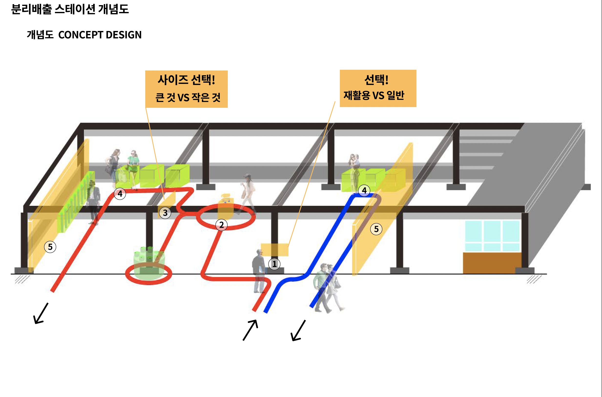

Project / Design Proposal
서울시 사회이슈 대응형 디자인 개발
A Design Development Service for Addressing Social Issues in Seoul

서울시의 일상 공공공간에서 심화된 사회·환경 이슈에 대응하기 위해, 시민 참여와 디자인 씽킹을 기반으로 공공 솔루션을 개발하고 사회적 임팩트 측정까지 염두에 둔 제안 프로젝트다.
This proposal developed public design responses to urgent social and environmental issues in Seoul, using citizen participation and design thinking to shape solutions with measurable social impact.
프로젝트 개요
이 프로젝트는 서울특별시가 발주한 2022 사회이슈 대응형 디자인 개발 용역으로, 코로나19 장기화로 심화된 시민의 심리적 피로감과 우울감, 그리고 일회용 쓰레기 증가와 같은 사회·환경적 문제에 디자인으로 선제 대응하는 것을 목표로 했다. 단순한 시설물 제안에 그치지 않고, 도시의 일상 공간 안에서 시민 경험을 바꾸는 공공 디자인 솔루션을 개발하는 데 초점을 두었다.
대상은 서울 시내의 일상적 공공영역을 이용하는 전체 시민이며, 지역 범위는 서울시 전역을 기반으로 설정되었다. 지하철 역사와 한강공원처럼 시민 밀도가 높은 공공장소를 주요 적용 가능 공간으로 검토했고, 서울숲 공원을 첫 번째 사례지로 삼아 구체적 시나리오를 전개했다.
프로젝트는 발주기관인 서울시 디자인정책과, 수행기관인 공공공간, 외부 자문 전문가가 함께 참여하는 구조를 바탕으로 설계되었다. 기술벤처, 소셜벤처, 비영리단체와의 협력 네트워크를 염두에 두었고, 디자인 씽킹 워크숍과 시민 참여를 통해 문제를 정의하고 솔루션을 도출한 뒤, 실제 구현 이후에는 사회적 임팩트를 정량적으로 측정하고 관리하는 체계를 구상했다.
결과적으로 이 제안은 공공디자인을 단순한 환경 개선이 아니라 시민의 정서적 회복과 환경 행동 변화를 유도하는 매개로 바라보며, 서울시 공공영역에서 반복 적용 가능한 대응형 디자인 모델의 가능성을 탐색한 작업이다.
This project was commissioned by the Seoul Metropolitan Government in 2022 as a design development service responding to social issues. It aimed to proactively address problems such as psychological fatigue and depression intensified by the prolonged COVID-19 period, as well as the increase in disposable waste, through public design rather than through policy messaging alone.
The target audience included all citizens using everyday public spaces across Seoul. While the geographic scope covered the entire city, highly frequented public sites such as subway stations and Hangang Park were considered key implementation settings, with Seoul Forest selected as the first pilot case for more detailed development.
The project was structured around collaboration between the Seoul Metropolitan Government's Design Policy Division, Zero Space Inc., and external advisors. It also envisioned a wider implementation network involving technology ventures, social ventures, and nonprofit organizations. Design thinking workshops and citizen participation were meant to guide solution development, followed by a framework for measuring and managing social impact after implementation.
In this sense, the proposal treated public design not simply as environmental improvement but as a tool for supporting emotional recovery and encouraging behavioral change in everyday urban life, while testing a repeatable model for issue-responsive design in Seoul's public realm.
State. 제안 Suggestion
Role. 리서치 Research, 디자인 Design
Partner. 공공공간 Zero Space Inc.
Client. 서울시 디자인정책과 Design Policy Division, Seoul Metropolitan Government